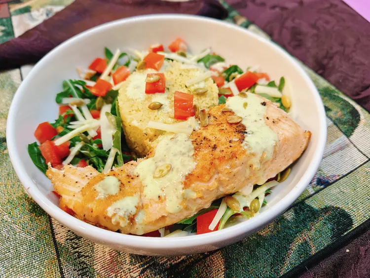

Salmon Salad

You will not find this homemade recipe in any restaurant
Ingredients
Dressing
- 1/2 cup mayonnaise
- 1/2 cup buttermilk
- 1/4 cup prepared pesto
- 1 lemon, juiced
- 1 clove garlic
- ground black pepper to taste
Couscous
- 1 (5.8 ounce) package herb and garlic couscous
Salmon
- 1/2 pound salmon filet, with skin
- 1 teaspoon Greek seasoning
- 1 teaspoon butter
- 1 teaspoon olive oil
Steps
- Add mayonnaise, buttermilk, pesto, lemon juice, and garlic to the bowl of a food processor.
Blend until smooth. Season to taste with black pepper. Set dressing aside.
- Meanwhile, heat a skillet over medium-high heat. Season salmon with Greek seasoning.
Cut salmon into two filets. Melt butter in a skillet over medium heat and add olive oil.
Place salmon, skin side down, in the hot skillet.
Cook until salmon flakes easily with a fork, about 8 minutes.
- Bring water to a boil in a saucepan; remove from heat and stir couscous into the water.
Cover saucepan and let stand until water is absorbed completely, about 10 minutes.
- To assemble, place salad mixture into 2 dinner bowls,
and sprinkle chopped tomatoes over the salad. Fluff couscous with a fork.
Mound couscous in the center of each bowl. Sprinkle Parmesan cheese around couscous.
Place a salmon filet to the side of the couscous.
Pour 1 to 2 tablespoons pesto dressing on top of dish.
Sprinkle with pepitas. Serve immediately.